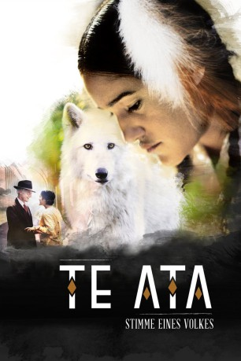

#11639 Te Ata - Stimme eines Volkes
 
 IMDB-Wertung: 6.6 / 10
IMDB-Wertung: 6.6 / 10  Metascore: 51
Metascore: 51 
Te Ata gehört dem Stamm der Chickasaw an und ist mit ihren Liedern, Tänzen und Geschichten aufgewachsen. Ihr großer Traum ist es, auf den Bühnen des Broadway zu stehen. Sie wurde 1895 im heutigen Oklahoma geboren, damals noch Indianer-Territorium. Es war eine Zeit des Wandels und der Entbehrungen für die Ureinwohner Amerikas. Die Regierung unternahm viele Versuche, sie in die neue Gesellschaft zu integrieren, doch viele hielten an ihren Traditionen fest. Und es sind diese Traditionen, die einen entscheidenden Einfluss auf Te Atas Leben haben werden. Für die Erfüllung ihres Traumes muss sie viele kulturelle Barrieren und zahlreiche Hindernisse überwinden. Sie wird in einem Vorsprechen nach dem anderen abgelehnt. Schließlich fragt sie sich, ob sie für ein Leben auf der großen Bühne wirklich gemacht ist. Doch getrieben von einer großen Leidenschaft kämpft Te Ata weiter und schafft schließlich das Undenkbare...
Jahr: 2016
Dauer: 106 Minuten
FSK: 0
Land: USA Studio: Jupiter FilmsTonspuren: DD5.1 - ,
Untertitel:
Auflösung: 1080p (1920x864) Größe: 3706 MB
Genre: Drama, Geschichte, Biographie
Regisseur: Nathan Frankowski
Drehbuch: Esther Luttrell, Jeannie Barbour, Esther Luttrell
Soundtrack: Bryan E. Miller
Darsteller:
 Q'orianka Kilcher als Te Ata
Q'orianka Kilcher als Te Ata Gil Birmingham als T.B. Thompson
Gil Birmingham als T.B. Thompson- Brigid Brannagh als Bertie Thompson
 Graham Greene als Douglas Johnston
Graham Greene als Douglas Johnston- Jenni Mabrey als Bettie Johnston
- Mackenzie Astin als Clyde Fisher
 Cindy Pickett als Miss Davis
Cindy Pickett als Miss Davis- Marissa Skell als Margaret
 Tom Nowicki als Thurlow Lieurance
Tom Nowicki als Thurlow Lieurance- Boriana Williams als Young Te Ata
- Gail Cronauer als Eleanor Roosevelt
- Stacy Cunningham als Mrs. Tucker
- Erin DeCoursey als Iva Mae
- Malarie Drake als Avis Thompson
- Robert Grossman als Willie Watts
- Geoff Koch als Taxi Driver
- Joe Maselli als Giuseppe Abello
- Grace Montie als Carla Bennett
- Robert Ousley als Senator Bates
 Morgana Shaw als Mrs. Brewster
Morgana Shaw als Mrs. Brewster- Michael D. Arite als Museum Patron (uncredited)
- Will Benzel als Man #2 (uncredited)
- Brett Bower als Slimeball #2 (uncredited)
- Sheri Davis als Committee Member (uncredited)
- Jay Dee als Bela Lugosi (uncredited)
- M. Elizabeth Dickerson als Railroad Passenger (uncredited)
- Katie Fairbanks als Native American Child (uncredited)
- Desiree' Jones als Audience Member (uncredited)
- Curt Martin als Newsie (uncredited)
- Connie Lynn Moore als Garden Party Performance Guest (uncredited)
- Joseph Nappo als Fruit & Vegetable Vendor (uncredited)
- Jonnie Parnell als High Society Lady / Aged Beauty Queen (uncredited)
- Sheril Rodgers als Committee Member (uncredited)
- William Sturgeon als Train Passenger (uncredited)
- Rick Vyper als Stagehand (uncredited)
- Kenneth Wayne Wood als White Dog Walker (uncredited)
- Zac Abbott als White Man
- Bill Anoatubby als New Yorker
- Jeannie Barbour als Casting Lady
- Lona Barrick als Lady Member
- Robert Cheadle als Conductor
- Gordon Fox als Senator Pettigrew
- Tommie Goad als Director
- Reese Hamilton als Eugene Thompson / Chickasaw Dance Troupe
- Blue John als Brewster Child
- Rylen Owen als Brewster Child
- Preston Owen als Brewster Child
- Lauren John als Gladys Thompson
- Breanna Kilhega als Johnston Child
- Jaclyn Darnell als Johnston Child
Datei: X:\2016(N-Z)\Te Ata - Stimme eines Volkes (2016, FSK0, 1920x864).mkv seit 13.08.2019
Festplatte: Gemischt-01+Anime
 Es gibt insgesamt 182 Filme in der Gruppe '2016(N-Z)'
Es gibt insgesamt 182 Filme in der Gruppe '2016(N-Z)'